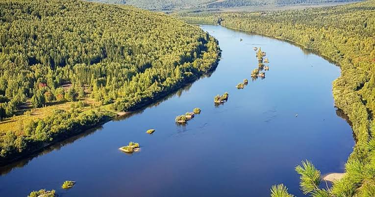

| № п/п | Категория ООПТ | Число ООПТ | Общая площадь, га | Доляплощади от региона, % |
|---|---|---|---|---|
| 1 | Государственные природные заповедники | 2 | 279 268,0 | 1,74 |
| 2 | Государственные природные заказники | 21 | 536 170,0 | 3,34 |
| 3 | Памятнкии природы | 88 | 4 571,2 | 0,03 |
| 4 | Природные парки | 1 | 125 413,0 | 0,78 |
| 5 | Иные категории | 107 | 21 260,48 | 0,14 |
ООПТ Федерального уровня
ООПТ Регионального уровня
ООПТ Местного уровня